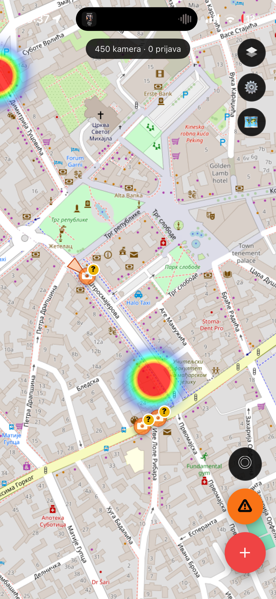
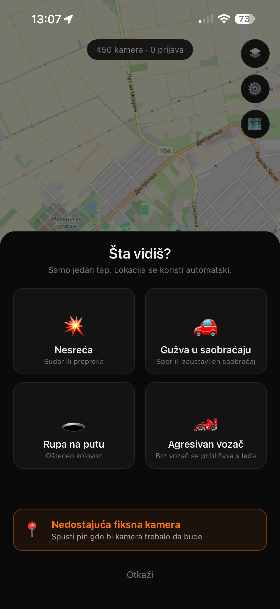
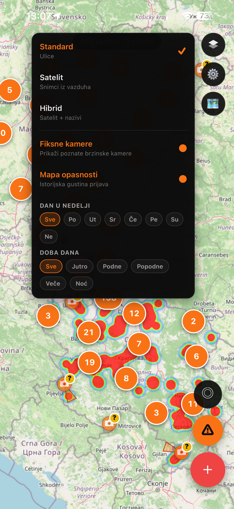
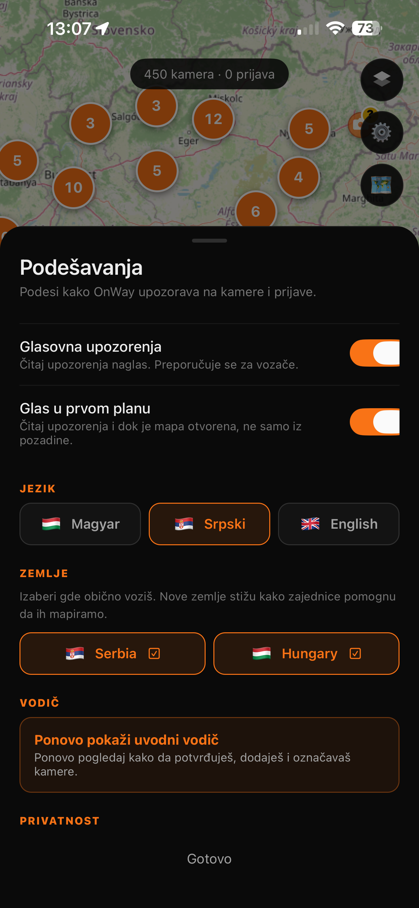
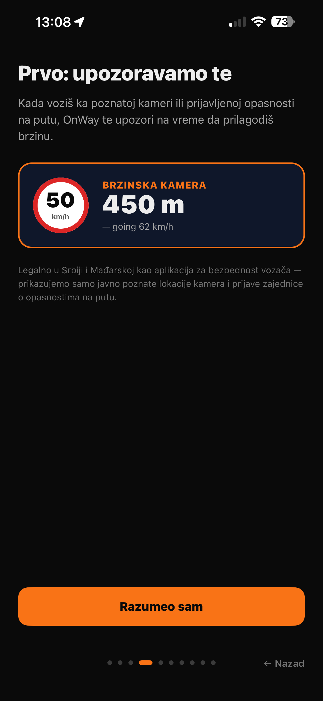

OnWay
Community-driven driver safety app for Serbia and Hungary. Stay alert to fixed speed cameras and live road hazards reported by other drivers as you travel.
Közösségi vezetőbiztonsági alkalmazás szerb és magyar sofőröknek. Légy előre figyelmeztetve a fix sebességmérőkre és a sofőrök által bejelentett aktuális útveszélyekre vezetés közben.
Aplikacija za bezbednost vozača u Srbiji i Mađarskoj, zasnovana na doprinosima zajednice. Upozorava te na fiksne brzinske kamere i aktuelne opasnosti na putu koje prijavljuju drugi vozači dok voziš.
🇷🇸 Serbia · 🇭🇺 Hungary


What OnWay does
Mit tud az OnWay
Šta OnWay radi
Everything you need to drive informed on the roads of Serbia and Hungary — quietly, anonymously, without ever signing up.
Minden ami egy informált vezetéshez kell Szerbia és Magyarország útjain — csendben, anonimul, regisztráció nélkül.
Sve što ti treba da informisano voziš na putevima Srbije i Mađarske — u tišini, anonimno, bez ikakve registracije.
Known fixed cameras from publicly available municipal and national traffic-authority lists, continuously refined by the community.
Ismert fix telepített kamerák publikusan elérhető önkormányzati és országos közlekedési hatósági adatokból, a közösség folyamatosan finomítja.
Poznate fiksne kamere iz javno dostupnih podataka opštinskih i državnih saobraćajnih organa, koje zajednica neprekidno usavršava.
Accidents, traffic jams, potholes, and general road hazards reported by other drivers, visible on the map in real time.
Balesetek, forgalmi dugók, kátyúk és általános útveszélyek más sofőrök által bejelentve, azonnal láthatók a térképen.
Nezgode, gužve, rupe na putu i druge opasnosti koje prijavljuju drugi vozači, odmah vidljive na mapi.
Spoken warning plus full-screen alert when you approach a known camera or a reported hazard ahead.
Hangos értesítés és teljes képernyős figyelmeztetés, amikor ismert kamerához vagy bejelentett veszélyhez közeledsz.
Glasovno obaveštenje i upozorenje preko celog ekrana kada se približavaš poznatoj kameri ili prijavi opasnosti.
See which areas tend to be hazardous, filtered by day of week and time of day. Plan around predictable patterns.
Láthatod melyik területen a legsűrűbbek az események, nap és napszak szerint szűrve. Tervezz a kiszámítható minták alapján.
Vidi u kojim područjima su najčešće opasnosti, filtrirano po danu u nedelji i dobu dana. Planiraj oko predvidljivih obrazaca.
No sign-up, no email, no phone number. Set an optional nickname only if you want credit for your contributions.
Nincs regisztráció, e-mail vagy telefonszám. Opcionális becenevet beállíthatsz, ha elismerést szeretnél a hozzájárulásaidért.
Bez registracije, e-pošte ili telefona. Postavi opcionalni nadimak samo ako želiš priznanje za svoje doprinose.
English, Hungarian, Serbian — switchable in-app. Everything including voice alerts and onboarding is localized.
Angol, magyar, szerb — appon belül bármikor válthatsz. Minden, a hangos riasztások és onboarding is lokalizált.
Engleski, mađarski, srpski — prebaci se u bilo kom trenutku. Sve uključujući glasovna upozorenja i vodič je prevedeno.



OnWay is a Points of Interest (POI) awareness app, not a signal-detection device. It uses only publicly available traffic-camera positions and community-submitted hazard reports. Legal for use in Serbia and Hungary as a driver safety aid. You remain responsible for observing posted speed limits, following traffic signs, and obeying local road traffic laws.
Az OnWay egy POI (érdekes pont) figyelmeztető alkalmazás, nem jelérzékelő eszköz. Kizárólag publikusan elérhető közlekedési kamerapozíciókat és közösségi bejelentéseket használ. Szerbiában és Magyarországon jogszerűen használható, mint vezetésbiztonsági segédeszköz. A sebességhatárok, közlekedési táblák és a helyi közlekedési szabályok betartása minden esetben a te felelősséged.
OnWay je aplikacija za upozoravanje na tačke od interesa (POI), a ne uređaj za detekciju signala. Koristi isključivo javno dostupne pozicije saobraćajnih kamera i prijave opasnosti od zajednice. Legalan za upotrebu u Srbiji i Mađarskoj kao pomoć za bezbednost vozača. Poštovanje ograničenja brzine, saobraćajnih znakova i lokalnih propisa je uvek tvoja odgovornost.